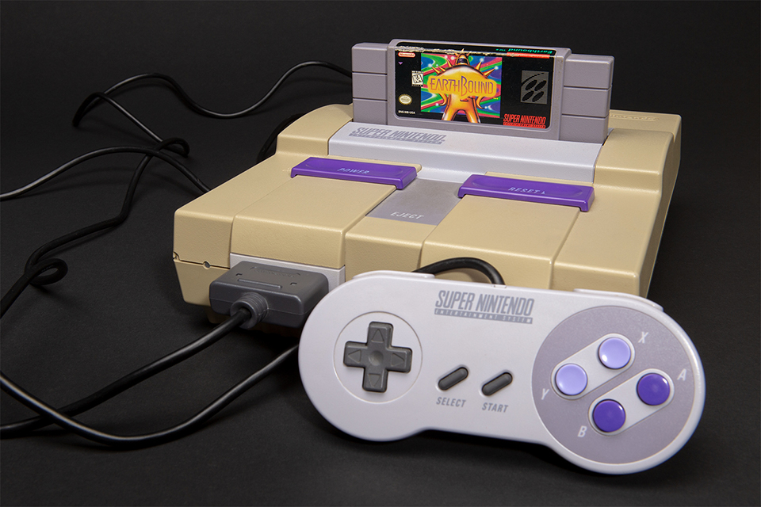
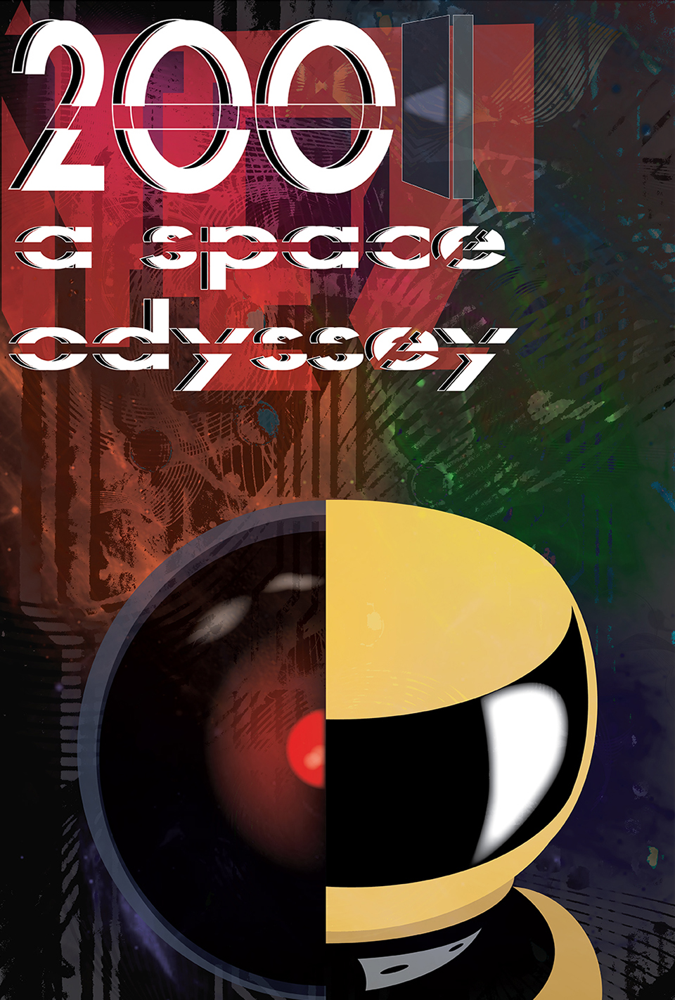
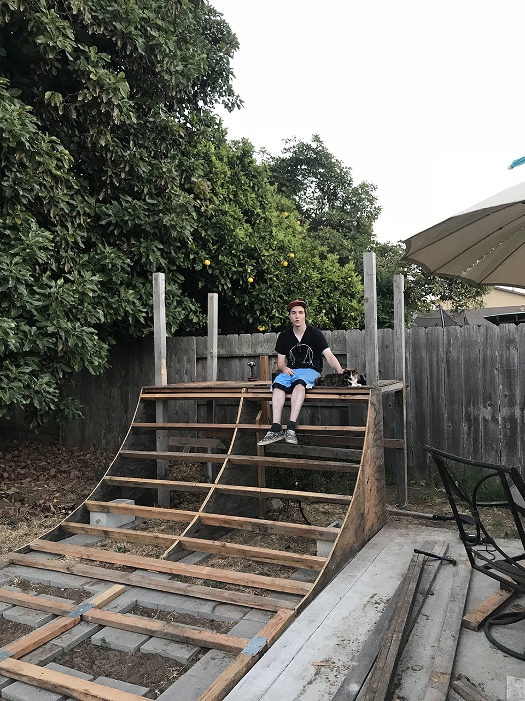
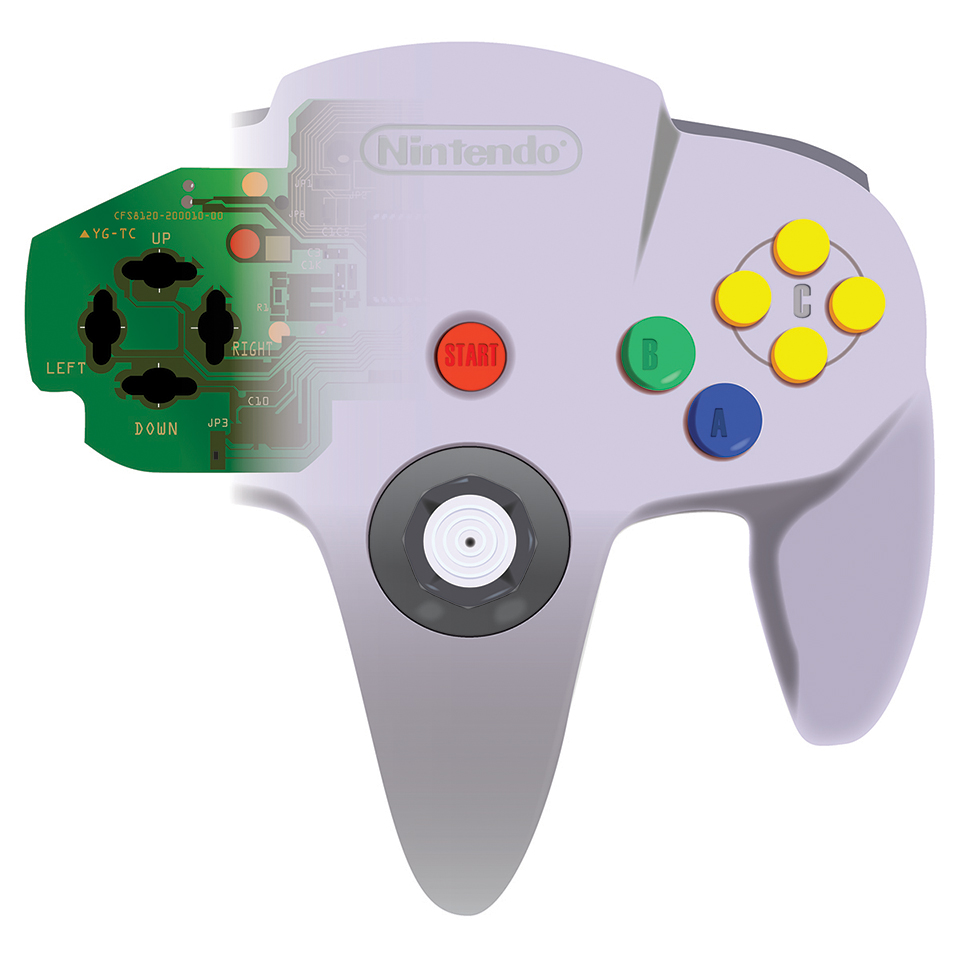

Our Paths Cross Logo Project
Logo project for the Our Paths Cross blog hosting clients — a minimalist, yet vibrant ode to the outdoorsy content the clients share. From ideation to the final product, see the steps it took in order to create the logo, and maybe check out the blog, too!
Super Nintendo Product Shoot
A project for a course with Brian P. Lawler of California Polytechnic State University, and a nod to personal interests. See a glimpse at one of my favorite pieces in my video game collection, the Super Nintendo Entertainment System along with an authentic Earthbound cartridge.
Movie Poster Project
A class project to create a movie poster based upon a favorite film, created with inspiration from minimalist design and the philosophical notions of the film, a chaotic piece that has become among my favorites.
Half-Pipe Personal Project
For a personal project, which holds much meaning for me, created technical drafts for a skateboard and bicycle ramp, as well as built the product over the process of a long, emotional summer.
N64 Technical Drawing
For an assignment, created a technical drawing of the infamous Nintendo 64 controller, a product which has played a massive part in my life. An intimate look inside the belly of the beast, as well as re-creation of the portions of the controller which serve a purpose.

Buddy Bowl Project
A group project for a marketing and sales course where the group, comprised of Samantha S., Haley A., and myself, was tasked with the design and marketing of a product.